Cociniños: Brócoli con jamón y bacon
Sat, 26 Nov 2011 00:27:49 PST
Mi historia con el brócoli es la misma que le puede estar ocurriendo a muchos niños (y no tan niños) y es que su aspecto no ayuda a querer comérselo. Sin embargo, un día, hace ya un par de años, el cocinero del cole donde trabajo lo preparó de un forma que me llamó mucho [ Read More ]
Mi historia con el brócoli es la misma que le puede estar ocurriendo a muchos niños (y no tan niños) y es que su aspecto no ayuda a querer comérselo. Sin embargo, un día, hace ya un par de años, el cocinero del cole donde trabajo lo preparó de un forma que me llamó mucho la atención y vi que los niños se lo comían encantados, no se si por los colores que rompían tanto verde o el olor del jamón, del bacon o de la cebollita. Eso me animó a probarlo y desde entonces forma parte de mi dieta habitual. Así que hoy lo comparto con vosotros a ver si los peques de la casa al verlo comen brócoli con ganas de verdad!
Ingredientes:
Brócoli (600 gr. aprox. para 4 personas)
1/4 de cebolla
3 lonchas Jamón cocido
5 lonchas de bacon
sal
2 cucharadas de aceite
Preparación:
Cortamos el brócoli en arbolitos dejando lo mínimo de tronco, que es lo que menos le gusta a los niños. A esto nos pueden ayudar ellos, ya que se parte bien con las manos y así además de participar, desarrollan las habilidades de motricidad fina.
Lavamos el brócoli y lo metemos en un olla con abundante agua con sal. El tiempo de cocción es aproximado, ya que el brócoli se puede comer desde crudo a muy hecho. Yo os recomiendo para empezar con esta verdura hacerlo bastante, unos 20 minutos, puesto que sino cruje y eso puede resultar poco atractivo para los peques. Cuando esté cocido, lo escurrimos y lo reservamos.
Por otro lado, cortamos la cebolla muy fina para que no se note al cocinarla, y el jamón cocido y el bacon en taquitos (esto también lo pueden hacerlos nenes con las manos o con la ayuda de unas tijeras). En una sartén con dos cucharadas de aceite echamos primero la cebolla y la hacemos a fuego muy muy lento. Cuando esté transparente, pero no hecha del todo introducimos el jamón y el bacon, sin subir el fuego. Removemos frecuentemente para que se haga todo por igual y cuando esté todo doradito unimos el brócoli y mezcamos bien para que coja el sabor y ¡a comer!
Resultado:

 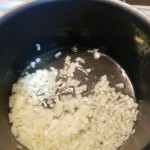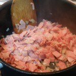
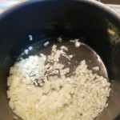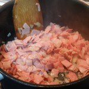Tiempo: 10 min. + 10-20 min. de cocción
Dificultad: 1/5
Digestión: 1/5
Precio: 3€
Croquetas de Otoño caseras: De pollo, nueces y castañas
Wed, 23 Nov 2011 23:29:59 PST
Las croquetas de toda la vida, esas que te hacía tu abuela, que tu madre te enseñó a hacer, y que tu ahora haces, y seguramente enseñes a tu hijo, esas que se hacen con amor, dedicación, con los restos del pollo del día anterior y que son uno de los manjares más deliciosos que [ Read More ]
Las croquetas de toda la vida, esas que te hacía tu abuela, que tu madre te enseñó a hacer, y que tu ahora haces, y seguramente enseñes a tu hijo, esas que se hacen con amor, dedicación, con los restos del pollo del día anterior y que son uno de los manjares más deliciosos que existen. Si, las croquetas, tanto en tan poco. Como toda receta de cocina que se transmite oralmente, cada generación añade su toque especial y a mi me apetecía conmemorar este Otoño dándoles un toque especial, es decir, añadiendo a las típicas croquetas de pollo, nueces y castañas de mi pueblo. El resultado ha sido excepcional. Os cederé mi receta secreta, tratadla bien 
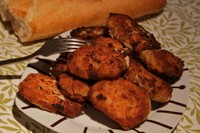
Ingredientes para 5 personas - (o menos y se congelan las sobrantes)
Restos de un pollo mediano
Una docena de nueces y una docena de castañas
Dos huevos y pan rallado para el rebozado
2 cucharadas llenas de harina
1 poco menos de un litro de leche
Un poquito de nuez moscada, sal y aceite
Aceite
Preparación
Hacer croquetas o bechamel siempre da miedo, pero no os preocupéis, que con un poco de practica y paciencia se consigue.
Lo primero que tenéis que hacer es calentar en una cazuela 2 cucharadas o un buen chorro de aceite ( se puede usar también mantequilla), cuando este caliente añadir el pollo, la nuez y las castañas para que se doren un poco, cuando estén doraditos los frutos secos añadir dos cucharadas bien llenas de harina y remover hasta que veáis que esta absorbe el aceite y se tuesta un poco, dejar que se dore pero nunca que queme demasiado, en cuanto veáis que la harina coge un tono marrón estará lista.
Ahora viene lo más “difícil”, a fuego medio tenéis que ir añadiendo poco a poco la leche sin dejar nunca de remover. Tener el litro al lado e ir calculando lo que os hace falta, primero echar un chorro y veréis como va espesando, en cuanto espese un chorro más y así hasta que casi terminéis con el litro de leche.
Al terminar de echar toda la leche veréis como la mezcla aun esta muy liquida para hacer croquetas, pero aquí esta la gracia de estas, tendréis que remover (sin parar) hasta que esta espese y empiece a despegarse de los bordes de la cazuela, entonces estará lista la masa.
En esta parte del proceso no debéis desesperar porque a fuego medio la masa puede tardar 20 min en espesar, y el brazo se cansa de tanto remover.
TRUCO: si habéis pasado más de 20 min removiendo y veis que la mezcla no espesa más y es demasiado liquida podéis ir añadiendo con una cucharilla de café un poco de pan rayado, este va a actuar como espesante.
Rebozado: Cuando la masa este lista habrá que meterla en una bandeja y dejarla en el frigorífico enfriar, yo os recomiendo que las dejéis un día entero. Con la masa ya fría ahora sólo queda el rebozado, cogéis con una cuchara un trozo de masa lo pasais por huevo y luego por pan rayado. Después le dais forma y directo al aceite caliente o al congelador, si queréis disponer de provisiones.

 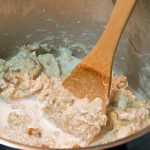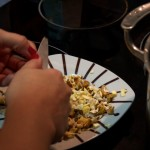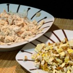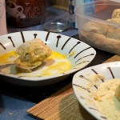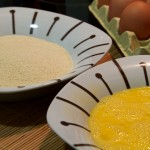
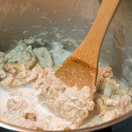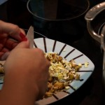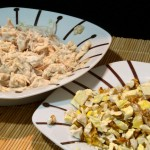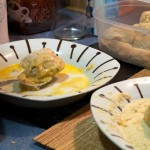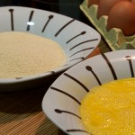
Resultado
No son las croquetas con la forma más perfecta del mundo, se os pueden romper, pueden no ser un plato que exhibir, pero el sabor es absolutamente inigualable, y como siempre digo, la satisfacción que crea el haber hecho unas croquetas con todo su proceso de elaboración y su sabor final, es todo un reto del que nos sentiremos siempre orgullosos, y haremos disfrutar a quien las pruebe. Deja de comprar croquetas congeladas, lánzate a usar los restos de pollo, cocidos y pescados y conviértete en croquetero profesional
Tiempo: 30 min de preparación. 1 dia hasta que enfria la masa
Dificultad: 4/5
Digestión: 4/5
Coste: 3 euros (u 8 si no contamos con el pollo del día anterior)
Cociniños: Tarta Gusano
Sun, 20 Nov 2011 22:02:51 PST
Hoy en Cociniños os traemos este apetitoso gusano de chocolate, una receta para que los peques de la casa se inicien en la repostería. Para hacer ésta tarta no les hará falta apenas la ayuda de un adulto, y se prepara en unos pocos minutos así que no les dará tiempo a aburrirse. Se puede [ Read More ]
Hoy en Cociniños os traemos este apetitoso gusano de chocolate, una receta para que los peques de la casa se inicien en la repostería.
Para hacer ésta tarta no les hará falta apenas la ayuda de un adulto, y se prepara en unos pocos minutos así que no les dará tiempo a aburrirse. Se puede preparar cualquier día porque sí, pero si además la hacemos como regalo o con motivo de un cumpleaños, los niños verán reconocido su trabajo al recibir todas las buenas críticas de amigos y familiares.
Ingredientes
1 Brazo de gitano (cuanto más largo mejor)
1 Galleta rellena de chocolate
8 ó 10 Gominolas
Lacasitos
Chocolate o tubos de azúcar decorativo
2 Palillos
Preparación
- Decoramos la galleta por uno de los lados, que va a ser la cara del gusano. Yo he utilizado tubos de azúcar de colores para pintarle los ojitos y la boca, pero también podéis usar chocolate de decoración de tartas, rotuladores de tinta comestible o simplemente derretir un poco de chocolate y meterlo en una bolsa de congelados con un agujerito en la esquina para usarla a modo de manga pastelera.
- Después hay que pinchar dos palillos por la parte de atrás de la galleta, con cuidado de no atravesar la segunda galleta para no hacerle un agujero en la cara al gusano (ver fotos más abajo).
- Una vez tengamos la galleta con los palillos, la “pinchamos” en uno de los extremos del brazo de gitano que tendremos ya preparado sobre la bandeja que vayamos a utilizar para servirlo.
- Ponemos unas gominolas en los lados para que hagan las veces de patas.
- Colocamos en la parte de arriba los lacasitos. Aquí tendréis que ayudar al niño, haciendo unos agujeritos con un cuchillo. Deben ser un poco más pequeños que el lacasito, para que no se vean los bordes del agujero. Ponemos los lacasitos en los agujeros y listo. Si queremos que no se muevan podemos derretir un poco de chocolate y echar en cada agujero para que se peguen.
Resultado
Pues ya lo veis, ¡queda monísimo!
Es verdad que no hemos hecho el bizcocho, pero lo que importa es que los peques se diviertan de una forma creativa y de paso vayan cogiendo afición por la cocina.
Además, un adulto tardaría 5 minutos en hacerlo, pero a un niño le puede mantener entretenido durante casi media hora ¿no es esa motivación suficiente? jeje
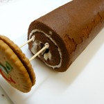Tiempo: 10-20 minutos
Dificultad: 1/5
Digestión: 3/5
Precio: 3,5€
Magdalenas o bollos de Maíz y Bacon
Thu, 17 Nov 2011 22:02:20 PST
No pensarías que todas las magdalenas o bollos eran dulces ¿verdad? Porque en la receta de hoy os traemos una delicia salada con forma y base de magdalena de bollo, y ni más ni menos que con dos ingredientes muy americanos. Cocinillas, os presento nuestras Magdalenas de Maíz y bacon o panceta, como prefiráis, una [ Read More ]
No pensarías que todas las magdalenas o bollos eran dulces ¿verdad? Porque en la receta de hoy os traemos una delicia salada con forma y base de magdalena de bollo, y ni más ni menos que con dos ingredientes muy americanos.
Cocinillas, os presento nuestras Magdalenas de Maíz y bacon o panceta, como prefiráis, una sorprendete receta que hará que tus amigos te hagan la ola, pero sobre todo con la que te sorprenderás. Y muy a nuestro estilo, fácil de hacer, sin muchas complicaciones.
Ingredientes para tres personas
Dos huevos
Un vaso y medio de leche
Un bote pequeño de Maíz Dulce
Un paquete de 150 gramos de Bacon
150 gr de harina de trigo
150 gr de harina de maiz ( si no teneis podeis hacerlo con sólo harina de trigo)
1 Sobre de levadura
Queso rayado ( la cantidad a gusto del consumidor)
.
Preparación
Es un bollo muy sencillo, a mi me recordó al típico que se hace con la medida de un yoghurt. Antes de empezar hay que precalentar el horno a 200º.
Lo primero de todo es cortar en cuadraditos el bacón y pasarlo por la sarten hasta que se dore bien, no es necesario que useis aceite, porque el bacon suelta mucha grasa. Cuando este listo apartarlo del fuego. El siguiente paso es ir añadiendo los ingredientes en un bol, pimero mezclar las harinas con la levadura, despues añadir el queso, el maiz bien escurrido y el bacon que habíamos dejado apartado. Movemos todo eso bien para que se mezcle. Esta parte de la receta me encanta porque es tan sencilla como mezcla todo, sin más historia.
En otro recipiente batimos los huevos y la leche y cuando esten listos lo vamos añadiendo poco a poco y removiendo con cuidado a la mezcla anterior. Tendreis que remover hasta que se forme una pasta no muy liquida.
Para terminar, añadir la mezcla a un molde para bizcochos o a moldes pequeños de magdalenas y meter en el horno a 200º durante unos 15/20 minutos, hasta que veáis que la parte de arriba esta doradita.
Sacarlos del horno y dejarlos enfriar.
Resultado
El resultado es sorprendente y sobre todo abre tu imaginación para cambiar el bacon o el maíz por cosas similares. Es simplemente un bollo salado, sólo necesitas mezclar ingredientes y al horno, ni hacer masa con las manos, ni vigilar no abrir el horno, ni cosas complicadas. A mi me ha encantado y ha durado en casa un día el bollo y eso que somos dos y es para tres. Le hubiera añadido más bacon, pero eso ya va al gusto. Atrévete, la cocina es explorar, y nos cuentas que tal te ha salido. 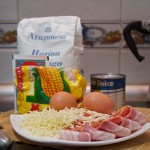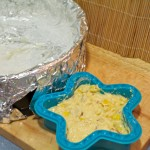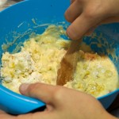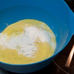
Tiempo: 30 minutos
Dificultad: 2/5
Digestión: 3/5
Precio: Unos 3,5€ en total
Cociniños: Crepes con crema de cacao
Tue, 15 Nov 2011 22:02:35 PST
Los desayunos y las meriendas en ocasiones por la falta de tiempo o para evitar situaciones desagradables son siempre iguales y los más peques de la casa se aburren y acaban dando problemas, cuando se puede hacer de forma que llame su atención y les resulte divertido. Por este motivo, para perder los miedos a [ Read More ]
Los desayunos y las meriendas en ocasiones por la falta de tiempo o para evitar situaciones desagradables son siempre iguales y los más peques de la casa se aburren y acaban dando problemas, cuando se puede hacer de forma que llame su atención y les resulte divertido. Por este motivo, para perder los miedos a los cambios hoy haremos crepes estilo cociniños, ya que al contrario de lo que pueda parecer en un primer momento, os sorprenderá el poco tiempo que se tarda en hacerlas.
Ingredientes:
1 vaso de harina
1 vaso de leche
2 huevos
1 cucharada sopera de mantequilla (y lo necesario para hacerlas)
2 cucharadas soperas de azúcar
Crema de cacao (tipo Nocilla)
Preparación:
En un cuenco mezclamos la harina con la leche muy despacito para que no se hagan grumos. Podemos hacer que el niño remueva mientras nosotros vamos echando la leche, o al revés. Cuando ya tengamos una papilla ponemos los dos huevos, la mantequilla y el azúcar, removiendo bien, preferiblemente con una cuchara de madera. Si han quedado grumos podemos pasar la batidora (introduciendo la batidora nosotros en el cuenco pueden usarla los peques sin problema, siempre con nuestra supervisión).
Después, calentamos una cucharadita de mantequilla en una sartén pequeña y cuando la mantequilla se derrita, con una cuchara de cazo echamos la masa en la sartén cubriendo la totalidad de la base, formando una capa fina. Damos la vuelta a la tortita cuando veamos que la masa se despega de la sartén y está tostadita y cuándo esté lista por los dos lados, la sacamos y untamos la crema de cacao. Y a comer rápido aprovechando que la crema se derrite con el crep caliente!
Resultado:
 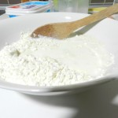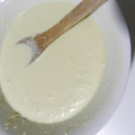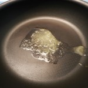
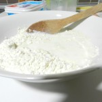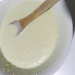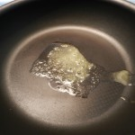
Tiempo: 10 minutos
Dificultad: 1/5
Digestión: 3/5
Precio: 2 €
Pimientos con relleno Express para Cocinillas con prisas
Sun, 13 Nov 2011 22:02:34 PST
Esta receta salió un día de esos que vas a 100 por hora y no sabes ya qué inventarte. No tienes tiempo, pero tienes hambre. Estás a un tris de abrir un sobre de comida precocinada, de esa que es como de plástico, pero te resistes y empiezas a improvisar y oh! sorpresa! resulta que [ Read More ]
Esta receta salió un día de esos que vas a 100 por hora y no sabes ya qué inventarte. No tienes tiempo, pero tienes hambre. Estás a un tris de abrir un sobre de comida precocinada, de esa que es como de plástico, pero te resistes y empiezas a improvisar y oh! sorpresa! resulta que el invento está francamente bueno!!

Ingredientes (para una persona, multiplica si sois más)
Un bote de pimientos de piquillo (suelen venir entre 6 y 7)
1 lata de atún escurrido
80 gr. de queso fresco (tipo Philadelphia, vale el normal y el light)
Un poco más de queso fresco y/o queso rallado fundente para decorar
Orégano
Preparación
Es tan fácil que da risa.
En un cuenco o en un plato echamos el atún bien escurrido junto con el queso, y lo mezclamos todo bien hasta obtener una pasta cremosa.
Rellenamos con esta pasta cada pimiento y los colocamos en una fuente de horno (o en una cazuelita individual como he hecho yo).
Decoramos con unos pegotillos más de queso sobre cada pimiento y un poco de orégano (también podemos añadir un poco de queso rallado si tenemos por ahí). Horneamos durante unos 15 minutos a 180º y ya está, ya lo tienes!
Variaciones
Para los cocinillas que tengan tanta prisa que no puedan esperar los 15 minutos de horno, quedan también estupendos si los calientas un minutito al microondas. Esta es una receta de tupper 100%
Si quieres darle un toque extra a la receta y tienes algo de tiempo, en vez de poner “pegotes” de queso sobre los pimientos, echa este queso en un cazo y derrítelo a fuego medio, viértelo por encima y después hornea. Está tan rico que parece mentira que sea tan fácil.
Por cierto, un “tip” extra: esta pasta de relleno es genial también como relleno de sandwiches (a lo bocadelia). Para este propósito puedes usarla así, tal cual está, o añadirle algún toque más como un poco de maíz, un pepinillo picado, o incluso un par de pimientos del piquillo cortados en trocitos pequeños. Ponlo entre dos rebanadas de pan y alucina!
Resultado
Una pasta de relleno muy versátil y un primer plato estupendo en un periquete!


Tiempo: 3 minutos de preparación (como mucho eh!) + 1 minuto de micro o 15 minutos de horno
Dificultad: 1/5
Digestión: 1/5
Precio: 2 €
Pimientos rellenos de cuscús con salsa de yogur
Thu, 10 Nov 2011 22:05:31 PST
Desde el día que descubrí lo rápido que se prepara el cuscús lo uso bastante a menudo. Ya me ha pasado alguna mañana que otra el no tener nada preparado para comer en el trabajo y recurrir a la fórmula “Cuscús directamente al tupperware, chorro de agua caliente, loqueseaquehayaenlanevera y ya está lista una buena [ Read More ]
Desde el día que descubrí lo rápido que se prepara el cuscús lo uso bastante a menudo. Ya me ha pasado alguna mañana que otra el no tener nada preparado para comer en el trabajo y recurrir a la fórmula “Cuscús directamente al tupperware, chorro de agua caliente, loqueseaquehayaenlanevera y ya está lista una buena ensalada”.
Hoy he hecho unos pimientos rellenos. Es una receta perfecta para una cena en casa en un día cualquiera, muy sana, completamente vegetariana y además muy fácil de hacer.
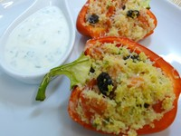
Ingredientes (para 4 mitades)
- 2 Pimientos
- 1 tomate
- 2 Puñados de cuscús
- 1 pastilla de caldo de verduras
- 2 cucharaditas de miel
- Un puñado de perejil
- 1 diente de ajo
- Medio limón
- 1 yogur natural sin azúcar
Preparación
Primero encendemos el horno a 180º para que se vaya calentando.
Partimos los pimientos por la mitad y eliminamos las pepitas (ver foto).
Ponemos el cuscús en un tazón con un puñado de pasas. En un vaso aparte mezclamos agua muy caliente (aprox 200ml), la miel, un chorro de limón y la pastilla de caldo de verduras. Echamos la mezcla sobre el cuscús y dejamos reposar de 3 a 5 minutos.
Mientras tanto partimos el tomate en dados y picamos muy bien el perejil. Cuando estén listos añadimos al cuscús todo el tomate y la mitad del perejil y mezclamos bien. Rellenamos los pimientos con ésta mezcla y los metemos en el horno. Podemos rallar un pelín de queso por encima si nos apetece.
Mientras se hacen los pimientos vamos preparado la salsa. Para ello mezclamos el yogur natural con el ajo machacado, el resto del perejil picado y la ralladura de medio limón (ya sabéis, sólo la parte amarilla, que la blanca de debajo amarga)
Una vez los pimientos estén listos, los sacamos del horno y servimos tal cual con un poquito de salsa al lado.
Resultado
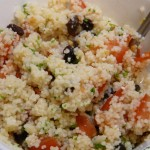Están muy ricos y la receta es de lo más fácil. La salsa de yogur les da un toque muy especial.
¡Probadlo!
Cómo cocer pasta sin olla: menos tiempo, menos agua y menos gas
Thu, 10 Nov 2011 06:51:03 PST
Hoy os traemos un truco que a más de uno le parecerá un milagro, aunque la gran mayoría somos muy clásicos para este tipo de cocina. Hoy vamos a ver cómo cocer pasta sin olla. Sí, sí, sin olla. De esta manera, se cuece la pasta en menos tiempo, utilizando menos agua, menos gas para [ Read More ]
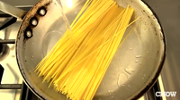
Hoy os traemos un truco que a más de uno le parecerá un milagro, aunque la gran mayoría somos muy clásicos para este tipo de cocina. Hoy vamos a ver cómo cocer pasta sin olla. Sí, sí, sin olla. De esta manera, se cuece la pasta en menos tiempo, utilizando menos agua, menos gas para calentar el agua, todo ventajas. Lo único que necesitamos es una sartén. Vamos al lío, que lo vemos en menos de 1 minuto:
Básicamente, utilizamos agua fría y una sartén. Hay que poner la pasta en la sartén y verter agua fría sobre la pasta hasta que la cubramos, y calentamos a tope. Se irá haciendo y sin pegarse.
Yo aún no lo he podido probar, pero tengo mucha confianza en CHOW Tips, porque inicialmente tenía mis dudas en cuanto a la textura, pero parece que quedan muy bien, ¿verdad?
¿Lo probaréis?
Via | CHOW Tips
Cociniños: Tarta de queso con mermelada de frutas del bosque
Wed, 09 Nov 2011 01:57:05 PST
Siempre he creído que hay tantas recetas de tarta de queso como familias, ya que vayas a casa de amigos como a un restaurante y pidas este postre no encuentras ninguna receta igual. Ésta la encontré un día por casualidad, ya que la receta que se hacía en mi casa ya me cansaba y por [ Read More ]
Siempre he creído que hay tantas recetas de tarta de queso como familias, ya que vayas a casa de amigos como a un restaurante y pidas este postre no encuentras ninguna receta igual. Ésta la encontré un día por casualidad, ya que la receta que se hacía en mi casa ya me cansaba y por innovar, pero ya no la cambio por nada del mundo porque se prepara sin ningún esfuerzo y resulta una tarta muy ligera.
En definitiva, es perfecta para preparar con niños: es sólo mezclar los ingredientes, no necesita horno, tiene una textura esponjosa y el sabor resulta muy suave para ellos.
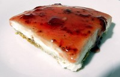
Ingredientes:
200g de queso blanco de untar (tipo Philadelphia)
500 ml. de nata líquida
3 cucharadas soperas de azúcar
6 placas de gelatina
3/4 paquete de galletas María (Aproximadamente)
2 cucharadas soperas de mantequilla (Aproximadamente)
mermelada de frutas del bosque (o de fresa, frambuesa, arándanos,…) líquida o no muy espesa
Preparación:
Primero vamos a preparar la base de la tarta por lo que picamos las galletas con una picadora, un mortero, etc. El grosor de la galleta lo elegís vosotros según os guste que se note más o menos. La cantidad va a depender del recipiente en el que luego montéis la tarta por lo que ir probando hasta que quede una capa de medio centímetro de grosor en toda la base del recipiente. Añadimos la mantequilla derretida previamente y mezclamos. Con la mantequilla pasa lo mismo, según la cantidad de galletas echaremos más o menos, aunque podemos calcular aproximadamente que por cada 3/4 del paquete de galletas, dos cucharadas soperas de mantequilla. Mezclamos bien hasta que la galleta forma una pasta y la extendemos bien de forma homegénea y aplastamos con los dedos hasta que queda bien compacta.
Preparamos entonces la tarta en sí, mezclando en un recipiente a parte, el queso con el azúcar y la nata. Cuando ya no queden grumos, se calienta en 75ml de agua las placas de gelatina, que hemos dejado en agua para que se ablanden, hasta que se derritan e inmediatamente se introduce en la mezcla anterior, removiendo rápidamente. Es aconsejable batir un poco para que la gelatina quede bien integrada.
Echamos esta mezcla encima de la pasta de galletas lentamente para que no se deshaga y metemos en la nevera a 3 ó 4 horas. Cuando esté ya cuajada untamos la mermelada y ¡A COMER!
Para los más golosos podemos cambiar las galletas María por cookies, la mezcla del chocolate con la mermelada es perfecta!
Resultado:
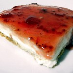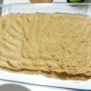 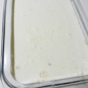
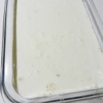Tiempo: 10 minutos + 3h de reposo
Dificultad: 1/5
Digestión: 2/5
Precio: 6 €
Alitas de pollo al estilo Kentucky Fried Chicken
Sun, 06 Nov 2011 22:03:52 PST
Kentucky Fried Chicken (o KFC ahora) es una cadena muy famosa cuya especialidad es el pollo frito. En España no es tan conocido, pero en el resto de Europa y sobretodo en EEUU e incluso Japón, que hasta celebra cenas de Nochebuena, es muy conocido. Yo no había ido jamás a ninguno, y fui por [ Read More ]
Kentucky Fried Chicken (o KFC ahora) es una cadena muy famosa cuya especialidad es el pollo frito. En España no es tan conocido, pero en el resto de Europa y sobretodo en EEUU e incluso Japón, que hasta celebra cenas de Nochebuena, es muy conocido. Yo no había ido jamás a ninguno, y fui por primera vez en Febrero de este año y en Londres. Tengo que reconocer que aunque no me llamaba mucho la atención las alitas fritas estaban buenísimas. El secreto está en el rebozado que usan, y aunque es una especie de receta secreta hoy vamos a enseñaros una que aunque no sea exáctamente igual se acerca mucho y está increíblemente buena.
Ingredientes (2 personas):
- 6 alitas de pollo
- Harina
- Leche y agua
- Pimentón dulce, curry en polvo, pimienta, tomillo, orégano y estragón
- Aceite
- Sal
Preparación
Es una receta muy sencilla, y el único truco está al final, cuando freímos, pero vamos a empezar por el principio.
Tenemos que mezclar 350-400 gramos de harina con 2 cucharadas de pimentón dulce, dos de curry en polvo y una de tomillo, una de orégano, una de estragón, una de pimienta y una pizca de sal. Removemos todo para que se junte bien.
Ahora lo separamos en dos boles a partes iguales, una será para marinar y otra para hacer el rebozado. En uno de los boles añadimos un chorrito de leche (como un chupito) y vamos echando agua y removiendo hasta que se hace una mezcla líquida pero sin perder del todo el espesor. Aquí marinaremos las alitas cortadas en dos, para separar muslito de alita, durante unas 3 horas, aunque si tienes mucha prisa a partir de 1 hora nos sirve.
Cuando haya transcurrido ese tiempo tenemos que pasar a la parte final del proceso, que es la más complicada. Calentamos aceite a toda potencia y pasamos las alitas del marinado una por una por la mezcla de harina que teníamos reservada para rebozar, y de ahí lo pasamos a la sartén con aceite. El secreto para que nos salgan bien está aquí, porque nos enfrentamos a dos problemas. Por un lado necesitamos el aceite suficiéntemente caliente para que cree esa costra típica crujiente del KFC, pero si está demasiado caliente las alitas nos quedarán crudas. El truco están en meterlas al aceite muy caliente durante un minuto y luego bajarlo al 6 durante unos 8 minutos para que se hagan bien las alitas, para por último volver a subirlo a tope unos 2 minutos y que dé el toque final.
Hay gente que usa como truco meterlas en el horno después de freírlas para que se hagan del todo por dentro, pero a mí no me gusta demasiado esa técnica ya que ablanda mucho la costra.
Por último pasamos las alitas por papel absorbente para quitar bien el aceite que sobra y las servimos para disfrutar. Están excelentes con una mostaza a la miel, pero te aconsejo que las pruebes sin nada para que disfrutes de esa deliciosa costra que se ha hecho alrededor.
 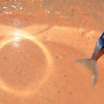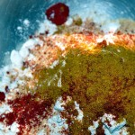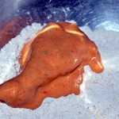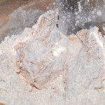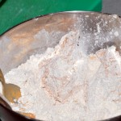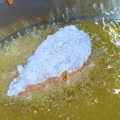
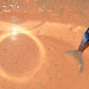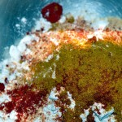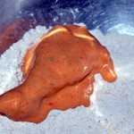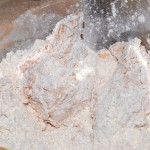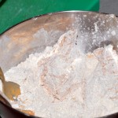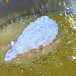Tiempo: 20 minutos + 1-3 horas
Dificultad: 2/5
Digestión: 3/5
Precio: 5 €
Receta fácil de Tarta de manzana
Sat, 05 Nov 2011 04:16:41 PDT
Tarta de manzana, un clasicazo de la cocina. A veces el sólo hecho de escuchar la palabra “tarta” ya nos da pereza, pero ésta es mucho más fácil de lo que parece y sobre todo, siempre sale bien. La repostería es una de las artes culinarias más complicadas; sin embargo, con esta tarta vas a dar en [ Read More ]
Tarta de manzana, un clasicazo de la cocina. A veces el sólo hecho de escuchar la palabra “tarta” ya nos da pereza, pero ésta es mucho más fácil de lo que parece y sobre todo, siempre sale bien. La repostería es una de las artes culinarias más complicadas; sin embargo, con esta tarta vas a dar en el clavo tengas experiencia o no. Hay muchas formas de hacer cada plato y cada receta, y esta creo que es una de las más sencillas para la tarta de manzana… con algo más que manzana.
Ingredientes
1 placa de hojaldre
4/5 manzanas
4 cucharadas de azúcar
La ralladura de una naranja
1/2 cucharadita de canela
harina
1 huevo
Preparación
Lo primero que tenemos que hacer es pelar bien las manzanas y cortarlas en 4 partes para poder quitarles el corazón. Cuando estén limpias cortar todas en rodajas gruesas y meterlas en el bol que vamos a utilizar para la tarta. Mezclar con las manzanas el azúcar la canela y la ralladura de la naranja. Así tendremos listo el relleno de nuestra tarta.
Para la tapa se requiere un poco más de mañana, pero no os asustéis que es fácil.
Coged un cuarto de la placa de hojaldre y amasarlo haciendo un churrito no muy fino, como hacíamos con la plastelina cuando éramos pequeños. Cuando el churrito tenga casi el largo que necesitamos para abarcar nuestro cuenco amasamos con un rodillo para que se nos quede una tira ancha y plana que cortaremos en dos. Tendremos que formar dos tiras de 1cm aproximadamente.
La primera tira la usaremos para hacer la base. Tendremos que untar un poco de huevo en el borde del molde y pegarla directamente, después amasaremos el resto de hojaldre que hemos guardado formando una placa grande que nos tape todo el molde. Cuando esté lista la colocamos y recortamos las partes sobrante
Para terminar pegamos con un poco de huevo la segunda tira en el borde y presionamos con los dedos para darle forma, nos podemos ayudar de un cuchillo. Presionamos con dos dedos y hacemos un cortecito entre ellos.
Si os sobra hojaldre podéis coger unos moldes y decorar vuestra tarta. Cuando todo este bien tapado untar bien de huevo y hornear a unos 200º durante 15/20 min, hasta que veáis que el hojaldre sube y se dora.
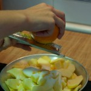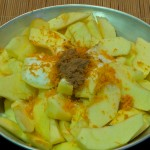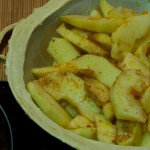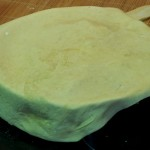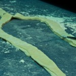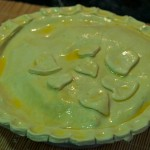
Resultado
El interior de la tarta está de muerte, se junta el jugo de la manzana con el azúcar y la naranja y se queda como una especie de jalea deliciosa. El problema, que sólo tenga la tapa de hojaldre, porque aunque cojamos un trozo de hojaldre y de relleno, los sabores y la texturas no se mezclan bien y a mí, al comer tartas sí me gusta tener base o algo de bizcocho u hojaldre que le de consistencia. Pero aunque ese sea un fallo de la receta el sabor del relleno hace que se te olvide. Está de muerte.
Tiempo: 20 minutos de preparación+ 20 minutos de horneado
Dificultad: 2/5
Digestión: 2/5
Precio: 2€
Cocinillas Places: The Lobby Cafe Madrid en Las Rozas Village
Thu, 03 Nov 2011 23:02:04 PDT
El otro día casi por casualidad acabé comiendo en un sitio que para nada me esperaba. Lleva muy poco tiempo abierto, y había oído hablar de él por rebote. Fui a hacer algunas compras a The Rozas Village (por si os interesa, al final no me compré nada) y me encontré con The Lobby Cafe, [ Read More ]
El otro día casi por casualidad acabé comiendo en un sitio que para nada me esperaba. Lleva muy poco tiempo abierto, y había oído hablar de él por rebote. Fui a hacer algunas compras a The Rozas Village (por si os interesa, al final no me compré nada) y me encontré con The Lobby Cafe, ni me acordaba que estaba allí. Eché un vistazo a la carta y no me pude resistir, la verdad es que está muy bien pensada para llamar la atención e invitarte a entrar.
Dirección: Las Rozas Village (Madrid) (ver mapa)
Teléfono reservas: 91 640 49 08
Web: The Lobby Café
Precio: 15€ / persona
Comida: 8/10
Lo primero que te llama la atención son los precios. Los de la carta casi ni los miras, porque el menú es una maravilla. Incluye media ensalada, cualquier plato de la carta, una bebida (agua, refresco o cerveza) y un café Nesspreso por 15€. Le falta el postre, que lo sustituyen por café, pero el precio del menú está muy bien. Sumando en la carta sólo los precios de un segundo plato y un capuchino ya son 15€.
Respecto a la calidad, muy buena. Francamente sorprendidos, la verdad, porque para ser un restaurante de comida rápida, o al menos de paso, es excelente. La ensalada caprese es sencilla pero muy rica, igual que la de espinacas, y la que me decepcionó bastante fue la César, que a pesar de llevar un parmesano muy rico y un pollo muy bien cocinado, lleva una salsa muy sosa y apenas tiene sabor. Una pena, porque como os digo el resto de la ensalada estaba francamente buena.
Quizás te asuste un poco el hecho de tener media ensalada sólo, pero no te preocupes, a mi también me pasó y el segundo lo soluciona de sobra. La cantidad de comida no es nada despreciable, y es muy difícil no quedar satisfecho en este aspecto. La hamburguesa es un plato muy recomendable; aunque sea muy típico es excelente. Pero si quieres algo alternativo prueba el Sandwich Phili, riquísimo, y eso por no hablar del perrito caliente de casi medio metro de longitud.
Pero no olvidemos los desayunos, porque también dan mucho de que hablar. Desde el basic que por 1.9€ nos ofrece un café y un croissant hasta el Lobby breakfast que por 4,50€ incluye café nespresso, huevo al plato, salchicha, bacon, medio tomate a la plancha, pan tostado y un zumo natural de 16cl, o el desayuno nórdico que cuesta 4,50€ e incluye café nespresso, tostada integral, queso Philadelphia, salmón y zumo natural 16 cl.
Todos los platos vienen muy bien presentados, y le da un toque muy sofisticado que se agradece. Por un momento te olvidas que estás comiendo en un restaurante de comida rápida y pagando 15€ por un menú completísimo.
Bebida: 7/10
Nada que destacar aquí, aunque se agradece muchísimo que los refrescos son una lata entera y no tirados de grifo y reducidos con agua, y la cerveza viene en tercios. Le doy un 7 por esas dos cosas, ya que aunque no sea un punto realmente a destacar del Lobby Café es importante cuidar estos detalles en este tipo de locales.
Abmiente: 8/10
Genial, de verdad, un ambiente estupendo. Podemos elegir comer fuera o dentro, y tienen un sistema curioso. El interior es muy acogedor, con sofás y sillones, recuerda bastante a los Starbucks mejor ambientados. Pero la palabra es esa, acogedor. El local se hace irresistible cuando entramos a verlo.
Trato: 7/10
Te sirven en la mesa, pero no te toman nota. Para ello tenemos que ir a la caja y hacer nuestro pedido, nos dan un cartelito con un número que tenemos que poner en nuestra mesa y así los camareros sabrán dónde llevar los platos. La verdad es que te tratan muy bien, son amables y ante cualquier malentendido piden disculpas. Se nota que quieren hacer las cosas bien, aunque la cara de cansancio es totalmente reconocible, se ve que la carga es bastante alta, lo que seguro que en más de uno se ha traducido en algún problema con clientes. Sin embargo lo que yo experimenté no fue para nada eso, todo correctísimo.
Valoración de Cocinillas: 7.5/10
Hay que ser conscientes de lo que estamos hablando. The Lobby Café es un restaurante de comida rápida, pero uno muy bien trabajado. También dobla en precio a uno normal, pero si lo comparamos con otras cadenas del estilo como puede ser Vips este es claramente superior. La comida es muy decente, viene excelentemente bien presentada y estamos en un ambiente muy acogedor.
Yo lo recomiendo mucho, a este precio de menú es uno de los sitios en los que primero pensaría.
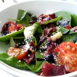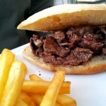
Gracias a vosotros estamos en la final de los Bitácoras
Wed, 02 Nov 2011 23:02:26 PDT
Lo primero de todo es daros las gracias. Si no fuera por vuestro inestimable apoyo, no habríamos conseguido lo que hemos logrado hoy: estar entre los 3 finalistas al Mejor Blog Gastronómico de España en los Premios Bitácoras 2011. Para nosotros esto ya es una victoria, ya os decimos si lo es. E independientemente de [ Read More ]

Lo primero de todo es daros las gracias. Si no fuera por vuestro inestimable apoyo, no habríamos conseguido lo que hemos logrado hoy: estar entre los 3 finalistas al Mejor Blog Gastronómico de España en los Premios Bitácoras 2011.
Para nosotros esto ya es una victoria, ya os decimos si lo es. E independientemente de que ganemos o ganen Velocidad Cuchara u Objetivo Cupcake, grandes blogs (felicidades a ambos, compañeros), nosotros ya nos sentimos realizados.
Cocinillas.es no tiene ni un año de existencia, y yo como uno de los fundadores y como Director actualmente estoy conmovido por haber llegado hasta aquí, más que nada porque la vida es muy curiosa y nos lo demuestra en estas pequeñas cosas. El año pasado, ganamos el Premio Bitácoras al Mejor Blog Tecnológico con El Androide Libre, y no pudimos ganar en la categoría general por la merecida victoria de Webos Fritos. En ese momento, en esa misma sala donde esperaremos el veredicto del jurado el día 11/11/11, Paolo y yo dijimos que haríamos un blog de cocina, para intentar quién sabe, ganar al año siguiente, al principio en plan de broma, pero con la ilusión de conseguirlo, pues nos apasiona la cocina, después la idea fue tomando cuerpo, y hasta hoy. Con esto quiero decir que no hay objetivos absurdos o imposibles, sólo existe el empeño, el trabajo y la ilusión por conseguirlo.
A ver si rematamos la jugada y podemos conseguir cocinar un plato de tan alta categoría. Os lo dedicaremos si así es, por supuesto.
PD: Gracias a Paolo, Dani, Adrián, Ana, Marta, Stfy, Romu, Alf, Sonia, Rebeca, Virgi, Ana Fuentes, Vanesa, Rafa e Isma por todo el trabajo para lograr llegar a la final, pero sobre todo… gracias a todos vosotros, queridos lectores.
Enlace | Bitácoras 2011
Fideos chinos con verduras y ternera en salsa de soja
Fri, 25 Nov 2011 01:01:55 PST
El título ya lo dice todo… una receta facil, muy sana y con un punto exótico, como a mi me gusta. Ingredientes (para 2 personas) 80 gr. de fideos chinos ½ pastilla de caldo de carne concentrado 1 diente de ajo 1 pimiento verde 1 cebolla 1 zanahoria 200 gr. de champiñones (preferiblemente frescos) [ Read More ]
El título ya lo dice todo… una receta facil, muy sana y con un punto exótico, como a mi me gusta.
Ingredientes
(para 2 personas)
80 gr. de fideos chinos
½ pastilla de caldo de carne concentrado
1 diente de ajo
1 pimiento verde
1 cebolla
1 zanahoria
200 gr. de champiñones (preferiblemente frescos)
2 filetes de ternera
Aceite
Sal
10 cucharadas soperas de salsa de soja
Preparación
Lavamos bien todas las verduras y las partimos en juliana (incluído el ajo, que lo partiremos como en palitos). Igualmente, lavamos y partimos los champiñones en láminas (si es que los hemos comprado enteros).
Por otro lado, cortamos los filetes de carne en tiras, como de un dedo de ancho y los reservamos.
En una sarten grande, ponemos a calentar un poco de aceite (una cucharada aprox.) y cuando esté bien caliente ponemos a rehogar primero el ajo un poquito y luego añadimos las verduras y los champiñones. Cuando las verduras estén hechas, agregamos la carne, sazonamos al gusto y deshacemos con los dedos la media pastilla de caldo de carne sobre la mezcla de verduras y ternera. Removemos bien a fuego medio y procuramos que la carne se haga por todas partes.
Es importante que añadais la carne en el último momento, ya que se hace relativamente pronto en comparación con las verduras que necesitan más tiempo de pochado. Si lo echais todo a la vez, la carne se os quedará pasada y no estará tierna.
Cuando ya tenemos todo cocinado, añadimos las 10 cucharadas soperas de salsa de soja y salteamos todo bien (quien dice 10 cucharadas, dice 8 o dice 12… va un poco en gustos, yo le puse algo más de 10, la verdad).
Mientras, en una olla, cocemos los fideos chinos según indique el fabricante en las instrucciones del paquete (en mi caso 5 minutos de cocción, escurrir y refrescar con agua fría)
En la misma olla que hemos usado para cocer los fideos, pero ya vacía y seca, ponemos otro poquito de aceite (una cucharada más o menos) y cuando esté caliente, echamos los fideos a freir (cuidado! que si todavía conservan algo de humedad, chisporrotearán y te puedes quemar!). Freímos los fideos un par de minutos a fuego medio-fuerte, sin parar de remover, para que no se quemen.
Finalmente, agregamos la mezcla de verduras y carne y mezclamos bien. Si te apetece, échale más salsa de soja, sin miedo (ya dije que le puse bastante)
Para darle un toque oriental completo, sirve en cuencos en vez de en platos y si te atreves, usa palillos!
Resultado
Un plato distinto, con un toque exótico, saludable y muy fácil de preparar
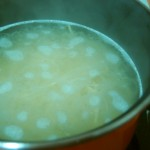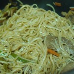
Tiempo: 30 ó 40 minutos aprox.
Dificultad: 1/5
Digestión: 1/5
Precio: 4 €
Mini hamburguesas variadas
Mon, 21 Nov 2011 22:02:27 PST
Hoy vamos a aprovechar que nuestros amigos de Hamburguesa Nostra han tenido a bien hacernos un obsequio para felicitarnos por nuestro reciente Premio Bitácoras, lo cual agradecemos, y les dedicamos esta receta, que no es más que tres recetas sencillitas en una sobre hamburguesas, tres formas de servir estas mini hamburguesas variadas, pero que sin [ Read More ]
Hoy vamos a aprovechar que nuestros amigos de Hamburguesa Nostra han tenido a bien hacernos un obsequio para felicitarnos por nuestro reciente Premio Bitácoras, lo cual agradecemos, y les dedicamos esta receta, que no es más que tres recetas sencillitas en una sobre hamburguesas, tres formas de servir estas mini hamburguesas variadas, pero que sin duda se pueden llevar a hamburguesas grandes, como queráis, como siempre.
Ingredientes (para 12 mini hamburguesas)
- 250 gramos de carne de ternera picada (o 12 mini hamburguesas de Hamburguesa Nostra, como en este caso)
- 12 panecillos de hamburguesa de tamaño mini (lo podréis encontrar en algunas panaderías o en Hamburguesa Nostra)
- 3 tipos de queso: Saint-Paulin, Queso Azul y Brie (o los que creáis convenientes)
- salsa barbacoa
- salsa de curry
- mayonesa
- mostaza
Preparación
Muy básico, aunque primero de todo hay que distinguir si hemos comprado mini hamburguesas directamente o necesitamos fabricarlas. En ese caso, tendremos que hacer filetes de hamburguesa, amasando la carne y utilizando más o menos la cantidad que utilizaríamos para hacer una albóndiga, un poco más tal vez. Calentamos la sartén o plancha y mientras vamos cortando los panecillos por la mitad, así como el queso, en trozos pequeños.
En mi caso me gusta la carne poco hecha, por lo que he puesto el fuego más fuerte para que se haga más por fuera que por dentro, evidentemente, será a la inversa si la queremos más hecha. Ponemos la carne en la sartén (no os recomiendo poner todas a la vez) y una pizquita de sal. Eso sí, tened en cuenta el tamaño de las hamburguesas. Se harán en un boleo, por lo que vuelta y vuelta, no más de 4 minutos por hamburguesa. Antes justo de que vayan a estar, ponemos un poco de salsa encima de la mitad aplanada del panecillo, ponemos la carne encima, y encima el queso, y cerramos con la otra mitad del panecillo.
Mis combinaciones (y que os recomiendo) son: queso azul con salsa de curry-mango (el contraste es buenísimo), brie con mayostaza (sí, he mezclado a partes iguales mayonesa y mostaza) y por último, salsa barbacoa con Saint-Paulin. El resultado ha sido fabuloso, y nos han encantado para fiestas con amigos, a modo de canapé. ¿Es una buena idea, verdad? ¡Pues a comer! Que aproveche.
Resultado
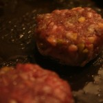Tiempo: 15 minutos
Dificultad: 2/5
Digestión: 3/5
Precio: 6-18€
Coliflor con salsa de queso
Sat, 19 Nov 2011 08:59:48 PST
¿Alguna vez has probado un plato de coliflor con bechamel? Ésta receta que os traigo hoy es muy parecida, pero en vez de bechamel haremos una salsa de queso que es más sencilla de preparar. De esa manera los que nunca hacéis este tipo de platos por miedo a que os salga mal la bechamel [ Read More ]
¿Alguna vez has probado un plato de coliflor con bechamel?
Ésta receta que os traigo hoy es muy parecida, pero en vez de bechamel haremos una salsa de queso que es más sencilla de preparar. De esa manera los que nunca hacéis este tipo de platos por miedo a que os salga mal la bechamel tenéis otra opción para prepararlos y no quedaros con las ganas. También puede ser una alternativa a la bechamel para celiacos.
Esta salsa se podría usar perfectamente para cubrir una lasaña. Sólo hay que tener en cuenta que el sabor es más fuerte por la cantidad de queso que lleva así que echaríamos una capa más fina y listo.
La receta es genial como acompañamiento. Para ponerlo al lado de un triste filete de pollo por ejemplo.
Ingredientes
1 Coliflor
Leche
200g de queso rallado fácil de fundir (yo uso cheddar)
Preparación
Para empezar precalentamos el horno a 180º.
Después hay que cortar la coliflor. La primera vez que yo tuve que cortar una coliflor puse la cocina perdida de granos blancos. La segunda vez me metí en internet antes de empezar y aprendí de un vídeo. Os lo dejo aquí para que a nadie le pase como a mí:
Una vez cortada la coliflor ponemos los trozos en una olla con agua y lo dejamos cociendo lentito unos 5 ó 6 min.
Mientras tanto vamos haciendo la salsa de queso. Para ello ponemos la leche en un cazo con el fuego al mínimo y cuando esté muy muy caliente (cuidado que no empiece a hervir porque entonces la leche se sale), vamos echando el queso poco a poco sin parar de remover con unas varillas. Notaremos que el queso se va deshaciendo y la salsa se vuelve más espesa. Es importante que esté muy caliente para que se derrita bien.
Después simplemente escurrimos la coliflor, la mezclamos con el queso y echamos todo en un recipiente para horno. Dejamos en el horno unos minutos y en cuanto esté un poco doradito por encima ¡Listo!
Resultado
Está buenísimo. La salsa espesa más cuando está en el horno. Yo lo suelo usar para acompañar otros platos porque lo puedo preparar en un momento.
Hay que controlarse porque te comes media fuente como la de la foto sin darte cuenta. Aunque, bueno, al fin y al cabo son verduras, ¿no? 
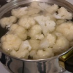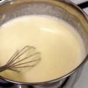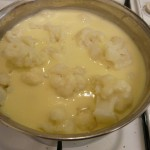Tiempo: 15 minutos
Dificultad: 2/5
Digestión: 2/5
Precio: 3,5€
Cómo preparar un espresso perfecto
Wed, 16 Nov 2011 22:02:14 PST
El café espresso, también conocido como expreso o exprés, es una forma de preparar café de origen italiano cuyo nombre surge de la cafetera exprés, que es la utilizada para su preparación. Ayer en Cocinillas tuvimos el gusto de atender a un taller sobre café organizada por café La Estrella en la agencia de viajes [ Read More ]
El café espresso, también conocido como expreso o exprés, es una forma de preparar café de origen italiano cuyo nombre surge de la cafetera exprés, que es la utilizada para su preparación.
Ayer en Cocinillas tuvimos el gusto de atender a un taller sobre café organizada por café La Estrella en la agencia de viajes en el tiempo. Como total ignorante sobre el café me pareció interesantísimo, y no he dudado ni un momento en compartir con vosotros lo que nos contaron, porque creo que merece la pena dedicarle unos momentos a un mundo tan interesante como es el del café. Pude asistir con una amiga a esta velada que nos prepararon, y la mezcla entre su buena compañía y el acto social que engloba el tomar un café no tiene igual, tanto por lo que aprendimos como por lo bien que lo pasamos.
Vamos a empezar como hemos empezado en el taller, hablando sobre el café expreso perfecto. El tema es muy teórico, y hay ciertos márgenes, pero como veremos luego nos es tan difícil cumplirlos, e igual que exigimos que una paella no esté pasada ni con el arroz duro, también podemos exigir que un café esté bien hecho, ya que es un producto por el que pagamos en un local especializado en alimentación y hostelería.
El café espresso se tiene que preparar con agua a 90ºC y 9 bares de presión. Este agua tiene que atravesar 7 gramos de café molido durante unos 25 segundos para dar una cantidad de 35 mililitros de café. Son muchas condiciones, pero son las ideales para preparar un café espresso perfecto. Respecto a los 35 mililitros hay variedad, ya que es aquí lo que hace que el café sea más corto o largo, y en Italia (de donde proviene esta forma de preparar el café) se prepara menor cantidad, en torno a los 20 mililitros.
En todo esto es clave el punto de molido del grano de café, ya que se puede hacer más fino o más grueso. Cuanto más grueso esté molido, menos resistencia opondrá el café al paso del agua y menos tiempo por lo tanto tardaremos en obtener esos 35 ml. Y os preguntaréis, ¿cuál es el punto ideal de molido del grano de café? Pues es aquél que produzca 35 ml de café en 25 segundos. Es decir, con cada cafetera habrá que jugar para obtener el molido que en ella produce los 35 ml en 25 segundos. Todo un arte, la verdad.
Otra curiosidad viene cuando hablamos de tipos de café, y es que nuestra cultura nos ha llevado a tener tres tipos de café: solo, con leche y cortado. Si eso tenemos como variación el americano. Vamos a hablar un poco sobre todo este asunto.
Una cosa que me ha resultado muy interesante es precisamente sobre este tipo de café, el americano. Tendemos a pensar que el café americano es un café largo más suave, porque tiene más cantidad de agua y la disolución esta menos concentrada. Sin embargo, aunque en parte cierto, hay un gran fallo en todo esto. El café tiene un punto máximo de aporte de cafeína al agua, y ese está por encima del que aporta en un espresso, por lo que cuando seguimos pasando agua por el café molido este sigue aportando cafeína, así que ese café tiene más cafeína que un espresso.
Cuando hablamos del café solo entramos en un nuevo mundo. Un café espresso es un café solo, pero la cantidad de formas de preparación que abarca el café solo es inmensa, así que pedir un café solo no es técnicamente correcto. Es de hecho el café espresso (aunque generalmente mal preparado) el que nos sirven al pedir un café solo. No vamos a meternos más aquí porque este terreno es peligroso, y nos daría para ya no una serie de artículos, sino para un libro entero.
Y por último hablemos del café con leche, ya que el 80% de los cafés servidos en España son con leche. Si ya hemos hablado de la importancia del café en su preparación tendremos que hablar también de la de la leche. Es importante no llegar a hervir la leche, pero tampoco a crear una espuma. Lo que queremos es conseguir una cremosidad, la cuál se logra agregando aire a la leche en forma de burbujas hasta que esta obtiene el punto de cremosidad perfecto, el cual sólo se puede lograr con mucho cuidado y práctica. Una forma de conseguirlo en casa es mediante esas pequeñas batidoras que venden con este fin. Yo tengo una y nunca la he conseguido usar bien, pero hoy nos han explicado el truco. Hay que dejar el aparato casi en la superficie, de modo que aporta aire a la leche. Si está demasiado fuera la hará muy espumosa, así que hay que jugar con esto y encontrar el punto adecuado. La leche tiene que estar caliente y es mejor si es entera, ya que la semidesnatada tiende más a hacer burbujas grandes y a generar espuma, aunque con práctica podemos encontrarle también el punto.
Espero que os haya gustado este pequeño artículo de introducción sobre el mundo del café. Personalmente me gusta mucho, pero este taller organizado por café La Estrella me ha abierto nuevas puertas. Como nos ha dicho Alex, el barista invitado, lo que tenemos que hacer es evolucionar en el mundo del café, tenemos que exigir un café de calidad y olvidar la tradición de 50 años en la que el café que tomamos lleva siendo igual. Es muy fácil preparar un buen café si uno quiere, así que si empezamos a exigir esa calidad poco a poco obtendremos un café realmente bueno.
Así que ya sabéis lo que hay que hacer para que escenas como esta no se tengan que volver a repetir:
Saquitos de pasta filo rellenos de gambas y calabacín al curry
Mon, 14 Nov 2011 22:02:35 PST
El otro día compré pasta filo para hacer una receta que hice hace mucho tiempo y que me apetecía compartir con vosotros, pero no pude hacerlo cuando normalmente hago las recetas, así que al final lo hice anoche para cenar. El plato en cuestión no es para una cena, es para comer, o así lo [ Read More ]
El otro día compré pasta filo para hacer una receta que hice hace mucho tiempo y que me apetecía compartir con vosotros, pero no pude hacerlo cuando normalmente hago las recetas, así que al final lo hice anoche para cenar. El plato en cuestión no es para una cena, es para comer, o así lo veo yo, así que he reutilizado la pasta filo para hacer algo más elaborado pero a la vez muy fino: saquitos de pasta filo rellenos de gambas y calabacín al curry. Para dejar flipando a las visitas, ya veréis.
Ingredientes (para 7-8 saquitos)
- 40 gambas pequeñas peladas
- 2 cebolletas pequeñas
- 2 hojas de pasta filo
- 1/2 calabacín
- Salsa de Curry (aquí tenéis unas cuantas opciones para elegir cómo hacerlo)
Preparación
Lo primero de todo es tener en cuenta que la pasta filo debe permanecer en la nevera hasta el último momento. ¿Lo tenemos claro? Perfecto, pues sigamos adelante. Lo siguiente va a ser cortar el calabacín y la cebolleta, muy finito, casi en brunoise. Cuando lo tengamos todo, es hora de sofreír la mezcla con muy poco aceite. Una vez hayan pasado unos 5 minutos, incorporamos las gambas, que estarán listas en otros 5 minutos, a fuego más fuerte en esta ocasión. Después bajamos el fuego e incorporamos el curry, durante otros 3 minutos removemos. Yo le he echado un pelín de salsa de soja antes de añadir el curry porque prefiero hacer eso que añadir sal, vosotros como veáis.
Una vez terminado, reservamos y metemos en la nevera, que necesitaremos que no esté caliente a la hora de montar el paquetito. Bien, lo siguiente es coger las hojas verdes sobrantes de la cebolleta y cortar en 4 finas tiras cada hoja (nos hará falta 1 tira para cada paquete, así que con dos hojas podría bastar). Esto lo utilizáremos para atar cada saquito.
Ahora viene el proceso de montaje, que es tal vez donde más peligro corréis pues hay que hacerlo rápido antes de que la pasta filo se empiece a secar. Pero antes vamos a precalentar el horno a 245º, y después, al lío. Cortamos cada hoja en 4 cuadrantes, ponemos un poco de relleno (una cucharada sopera) en el centro, cogemos los extremos, hacemos un saco y atamos con la tira de hoja verde de cebolleta. Los vamos poniendo todas sobre papel de horno en una bandeja. Una vez terminados todos, ya sólo es cuestión de meterlos en el horno y bajar a 200º y dejarlo durante unos 15 minutos. Estaros atentos porque esto no es una ciencia exacta (este último punto) y es hasta que estén dorados. Tened cuidado de poner demasiado relleno o se romperán por debajo los saquitos al sacarlos del horno, me ha pasado, vaya…
Bueno, pues una vez todo listo, sólo es cuestión de presentar, quedaros con vuestros comensales y degustar este manjar (está buenísimo, de verdad). Que aproveche.
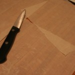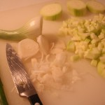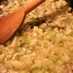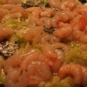Tiempo: 40 minutos
Dificultad: 3/5
Digestión: 2/5
Precio: 4 €
Mejor blog Gastronómico 2011 gracias a vosotros
Sun, 13 Nov 2011 01:24:35 PST
Gracias, sobre todo gracias a todos los que han votado Cocinillas.es, los que han confiado en este proyecto común y los que han preferido la determinación de un sueño y la ilusión de un equipo que disfruta con cada receta, noticia e ingrediente de este fantástico plato. Cocinillas.es consiguió clasificarse como finalistas y ganamos como mejor [ Read More ]
Gracias, sobre todo gracias a todos los que han votado Cocinillas.es, los que han confiado en este proyecto común y los que han preferido la determinación de un sueño y la ilusión de un equipo que disfruta con cada receta, noticia e ingrediente de este fantástico plato.
Cocinillas.es consiguió clasificarse como finalistas y ganamos como mejor blog Gastronómico. No hay mucho más que decir, casi un año después de haber empezado, hemos llegado hasta aquí, un premio que va más allá de una estatuilla. La satisfacción es enorme y la recompensa fantástica para un trabajo invisible que se despliega día a día y entre tanta gente. Como un buen plato, que tarda en cocinarse y que no sólo es la mezcla pautada de ingredientes lo que lo hace, ya sabemos todos que a la cocina además, hay que ponerle amor.
No quiero olvidarme de Velocidad Cuchara y Objetivo Cupcake, los otros dos blog finalistas, dos estupendos competidores que seguimos y admiramos y con los que queremos seguir caminando junto a otros blog de cocina, en este apasionante mundo de la cocina, que uno nunca termina de descubrir por completo.
Ahora queda otro año por delante para seguir trabajando en este proyecto de información, de comunicación, un proyecto para compartir nuestras pasiones. Sin duda lo que está por venir es aún mejor que lo ocurrido y lo ganado. Confiad en que seguiremos dando todo lo que tenemos dentro, que habrá sorpresas, maravillosas y nuevas recetas, trucos, platos típicos que enorgullecerán a nuestras abuelas, noticias de gastronomía y actualidad y más, mucho más, ideas tenemos cientos y este bitácoras es el fogón que necesitábamos para hacer este guiso en el que sois parte. De nuevo, gracias, por este premio y como veis en el foto, el que nos disteis con tufutbolin.com como mejor blog deportivo. Fue una noche inolvidable.
El premio, la recompensa, es el reconocimento por el esfuerzo. Ganadores y perdedores son iguales en la balanza de la justicia del merecimiento.
¿Cómo se hacen las patatas fritas Pringles?
Thu, 10 Nov 2011 07:08:15 PST
Es posible que no, pero yo personalmente alguna vez me he preguntado cómo se hacen las pringles, esa forma que tienen, tan artificial, pero que le dan ese toque especial, precisamente la característica que las hace las patatas fritas más famosas del mundo. Uno más, de los muchos ejemplos en los que la comida toma [ Read More ]
Es posible que no, pero yo personalmente alguna vez me he preguntado cómo se hacen las pringles, esa forma que tienen, tan artificial, pero que le dan ese toque especial, precisamente la característica que las hace las patatas fritas más famosas del mundo.
Uno más, de los muchos ejemplos en los que la comida toma otras formas diferentes de las naturales para que nos atraigan más. Los grandes ejemplos son por ejemplo las varitas de merluza, con ese aspecto tan sencillo, rebozadas y fáciles de comer, son la excusa ideal para que un niño coma pescado.
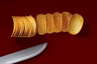
Aunque, hay veces que algo que tenemos como una cosa y resulta no serlo. Y es lo que pasa con las pringles: El concepto real de patatas fritas, podríamos decir que es cuando cortamos una patata, con la forma que sea, la freímos y el resultado son los “snacks”.
Pero ese no es el proceso que se sigue para llegar a estas “patatas”. Tanto es así, que la empresa de Pringles llegó a afirmar una vez que sus patatas, por su contenido y procesamiento hacía que técnicamente no fueran patatas fritas, lo que tuvo mucha controversia, ya que se dijo que la empresa se auto-saboteó, ya que lo hacía para evitar los impuestos de lujo que Reino Unido impone a las patatas fritas, porque siendo un simple “snack” se convertía en un alimento necesario.
En vez de pelar patatas, cortarlas en láminas y freírlas, para las pringles se parte de una especie de papilla de arroz, trigo, maíz y patata. Ésta papilla se extiende en láminas y la máquina hace el resto para cortarlas y quitar el sobrante.
Después pasa por una cinta transportadora y se presiona en moldes que se mueven por aceite hirviendo. De esta forma se fríen y se queda su forma característica. Cuando están secas se les añade el sabor en polvo y vuelven a otra cinta, que lleva a las latas que nos llegan a casa.
Para que os quede más claro, os dejamos con un vídeo del proceso:
San Jacobos de lomo con empanado crujiente de Corn Flakes (al horno)
Wed, 09 Nov 2011 22:02:16 PST
Como ya os conté hace no mucho, la fritanga y yo no somos muy amigas, sin embargo, ironías de la vida, me encanta todo lo que va empanado, por eso siempre busco la forma de hacer estas preparaciones quitándole toda la grasa posible pero tratando de no perder sabor ni ese punto crujiente que da [ Read More ]
Como ya os conté hace no mucho, la fritanga y yo no somos muy amigas, sin embargo, ironías de la vida, me encanta todo lo que va empanado, por eso siempre busco la forma de hacer estas preparaciones quitándole toda la grasa posible pero tratando de no perder sabor ni ese punto crujiente que da la fritura al rebozado de pan.
Hace unas semanas os enseñé a hacer empanados crujientes al horno y con un punto de queso, hoy os traigo una variedad con algo más de sabor y un extra de crujiente porque en vez de pan, vamos a empanar nuestra carne en copos de maíz (los corn flakes de toda la vida) ¿Sorprendid@? Lo estarás más si lo haces y lo pruebas! Riquísimo!!
En este caso vamos a empanar con esta técnica unos San Jacobos de lomo, pero puedes hacerlo casi con cualquier cosa. Pruébalo y nos cuentas.

Ingredientes
½ kilo de lomo de cerdo en filetes finitos
sal y pimienta al gusto
200 gr. de jamón york
200 gr. de queso fundente (yo en este caso usé un havarti, que me encanta)
200 gr. de corn flakes (importante! Que sean los normales, no los que vienen azucarados!)
½ cucharadita de pimentón dulce
1 cucharadita de ajo en polvo (también sustituible por un diente de ajo, pero tienes que picarlo muy muy fino)
1 cucharadita de perejil picado
3 cucharadas soperas de aceite de oliva
Preparación
Lo primero que debemos hacer es preparar nuestro rebozado, así que hay que triturar los copos de maíz. Para hacerlo puedes hacer uso de un mortero o como hice yo, puedes meterlo en una bolsa de congelados (mejor si tienen cierre con zip), extenderlos dentro de la bolsa para que estén lo menos apegotonados posibles y pasar por encima un rodillo de amasar varias veces hasta que esté triturado. Ojo! tiene que quedar triturado pero con consistencia, no queremos polvo de corn flakes, así que si tienes un robot de cocina y piensas utilizarlo para el triturado, ten cuidado de no pasarte. Deben quedar trocitos muy pequeños pero visibles.
Volcamos los corn flakes triturados en un plato, le agregamos el pimentón, el ajo y el perejil y mezclamos todo bien. Reservamos.
En otro plato, vertemos el aceite y reservamos también.
A continuación, vamos a montar nuestros San Jacobos con 2 filetitos de lomo, 2 lonchas de jamón y 1 loncha de queso en el medio. Para que no quede un mazacote, es interesante que los filetes de lomo sean lo más finos posibles. Si son un poco gordos, puedes utilizar un martillo de cocina para aplanar un poco la carne o incluso un rodillo para estirarlos y afinarlos un poco. Después de estirarlos, salpiméntalos al gusto.
El orden de los ingredientes es como un bocadillo capicúa: 1 filete de lomo, una loncha de jamón, 1 loncha de queso, 1 loncha de jamón y por último 1 filete de lomo.
Con el San Jacobo ya montado, con cuidado, le damos unas pasaditas por el plato que contiene aceite y acto seguido lo pasamos al plato con los corn flakes. Que quede bien tapado de cereales por los dos lados.
Disponemos el San Jacobo en una fuente para horno y repetiremos el proceso hasta que terminemos con toda la carne.
Una vez tenemos nuestra bandeja de horno lista con los San Jacobos, horneamos durante unos 15 ó 20 minutos a 200º
Resultado
Otra forma más de empanar y no freir; todo el sabor sin apenas grasa!


 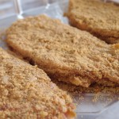
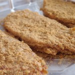


Tiempo: 15 / 20 minutos de preparación + 15 / 20 minutos en el horno
Dificultad: 2/5
Digestión: 3/5
Precio: 4 €
Revuelto de morcilla con picatostes
Mon, 07 Nov 2011 22:02:21 PST
Hoy os traemos un platillo muy típico español y muy socorrido, perfecto para cuando viene mucha visita a comer y no sabes cómo empezar para acertar con todos. Pues no hay muchas personas que no les guste la morcilla… Al menos una vez la prueban. Hoy vamos a preparar: revuelto de morcilla con picatostes. Ingredientes [ Read More ]
Hoy os traemos un platillo muy típico español y muy socorrido, perfecto para cuando viene mucha visita a comer y no sabes cómo empezar para acertar con todos. Pues no hay muchas personas que no les guste la morcilla… Al menos una vez la prueban. Hoy vamos a preparar: revuelto de morcilla con picatostes.
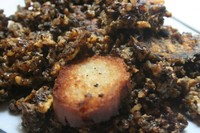
Ingredientes
- 2 morcillas de Burgos
- un puñado de piñones
- 2 huevos
- aceite y sal
Preparación
Tal vez esta sea una de las recetas más sencillas que os podemos presentar, pero tiene su truco. Primero, porque aun siendo una morcilla de arroz, le ponemos piñones que eso siempre le da un toque, y segundo, porque el huevo tiene que quedar en su punto justo entre cuajado y poco hecho. Aunque eso sí, para gustos, los colores.
Despiezamos la morcilla (desaprovechando la tripa en principio) y la juntamos toda. En una sartén con un pelín de aceite la calentamos y añadimos los piñones a la mezcla, y seguimos dándole vueltas con una cuchara de palo durante unos 5 minutos, dejándola reposar de tanto en cuando. Todo esto a fuego medio-alto.
Abrimos dos huevos y los vertemos sobre la morcilla y mezclamos con un tenedor de forma homogénea y enérgicamente. Bajamos poco a poco el fuego para que no se cuaje en exceso, mientras seguimos mezclando un poco más. Y ya está.
Sólo nos quedan los picatostes. Cortamos unos trozos de pan finos pero tampoco mucho, calentamos aceite abundante en una sartén, a fuego muy alto. Cuando esté caliente del todo, tan sólo tenemos que meter los trozos de pan, esperar unos segundos (10-15) y darles la vuelta, repetir la cuenta y sacarlos de nuevo. Tan sólo queda emplatar, decorar con los picatostes, y fin, que aproveche.
Resultado
Tiempo: 20 minutos
Dificultad: 1/5
Digestión: 4/5
Precio: 5 €
La “Nespresso” para tu bebé
Sun, 06 Nov 2011 01:00:36 PST
Para gustos colores, y en eso han pensado los de Nestlé a la hora de hacer esta “Nespresso para bebés” llamada BabyNes. Y no, no nos hace cafés, lo que sí que hace es preparar biberones con la temperatura y la dosis que nosotros queramos. Desde BabyNes comentan que por ahora sólo se comercializa en Suiza, pero Nestlé [ Read More ]
Para gustos colores, y en eso han pensado los de Nestlé a la hora de hacer esta “Nespresso para bebés” llamada BabyNes. Y no, no nos hace cafés, lo que sí que hace es preparar biberones con la temperatura y la dosis que nosotros queramos.
Desde BabyNes comentan que por ahora sólo se comercializa en Suiza, pero Nestlé no descarta ampliar su mercado. Ellos nos aseguran que tendremos “la dosis perfecta a la temperatura perfecta en menos de un minuto con solo pulsar un botón”.
Ha tenido varias críticas y desde la OMS (Organización Mundial de la Salud) se ha recordado que siempre que sea posible, se debe dar leche materna hasta al menos el sexto mes. Nestlé asegura que opina igual, e incluso que habría que alargarlo hasta que la madre no pueda más, y que su BabyNes es una opción para cuando se acabe con la lactancia materna o cuando no se pueda dar ésta.
Al igual que con el café, hay varios tipos de cápsulas, pero éstas, en este caso, dependen de la edad del niño o niña en cuestión: Hay cuatro tipos para el primer año de vida y dos para el segundo.
¿Veis práctica la idea de BabyNes? ¡Contadnos!
Vía | MuyInteresante
Super Leche modificada en el laboratorio
Fri, 04 Nov 2011 08:00:17 PDT
Hace poco Juanma nos contó cómo ha evolucionado la ciencia estos últimos años, incluso para sacar carne de la “nada“, y hoy os voy a traer otro aporte de la ciencia a la alimentación, en este caso, de los peques. También por unas modificaciones genéticas, pero en las vacas, más concretamente las vacas frisonas (que [ Read More ]
Hace poco Juanma nos contó cómo ha evolucionado la ciencia estos últimos años, incluso para sacar carne de la “nada“, y hoy os voy a traer otro aporte de la ciencia a la alimentación, en este caso, de los peques.
También por unas modificaciones genéticas, pero en las vacas, más concretamente las vacas frisonas (que tienen manchas grandes negras y blancas).
Unos científicos chinos han conseguido que estas vacas tengan en su leche una mayor cantidad de lisozima, que es una proteína que hay en la leche materna, así como en las lágrimas y la saliva y que ayuda al niño, haciendo que éste no tenga infecciones bacterianas. De hecho, ya la han etiquetado como un método de prevención de enfermedades infantiles.
Además de conseguir que tenga 25 veces más esta proteína, contiene lactoferrina, que a parte de ser otra proteína con propiedades antibacterianas, también las tiene antifúngicas. Se modificaron los niveles de sólidos en la leche y aumentaron el contenido graso de la misma, haciendo que se parezca, más si cabe, a la materna. Ning Li, el director de la investigación asegura que es una leche normal pero con un sabor más fuerte.
Teniendo en cuenta que esta investigación ha sido financiada por una de las compañías de biotecnología más importantes del mundo, Beijin Gen Protein, no es ninguna tontería que dentro de poco escuchemos más hablar sobre ésto, y que en un futuro sea una realidad.
En aquellos casos en los que por alguna razón la madre no pudiera dar pecho a su hijo o hija ¿crees que estaría bien contar con algo así?
Via | MuyInteresante |
Receta de Flan de huevo, el de toda la vida
Thu, 03 Nov 2011 07:59:36 PDT
A veces me complico demasiado. Le doy demasiadas vueltas a las cosas porque quiero superarme cada vez más, en casi cualquier aspecto de mi vida, así que en la cocina no podía ser menos; el día menos pensado me pongo a desestructurar y a esferificar y me quedo sola. Por eso, a veces se me [ Read More ]
A veces me complico demasiado. Le doy demasiadas vueltas a las cosas porque quiero superarme cada vez más, en casi cualquier aspecto de mi vida, así que en la cocina no podía ser menos; el día menos pensado me pongo a desestructurar y a esferificar y me quedo sola.
Por eso, a veces se me olvida que en ocasiones los mejores placeres están en las cosas más simples. Como este flan que os traigo hoy, el de huevo de toda la vida, el que hacían nuestras madres, el que recibíamos como un premio, el que sabe a tardes de domingo y a dibujos animados. Ese.
Ingredientes
Para el flan
- 750 gr. de leche entera
- 6 huevos
- 125 gr. de azúcar
Para el caramelo
- 100 gr. de azúcar
- 4 cucharadas soperas de agua
- unas gotas de zumo de limón
Preparación
La cosa no puede ser más fácil, simplemente mezclamos todos los ingredientes del flan en un bol grande, así de sencillo. Para la mezcla puedes ayudarte de tu robot de cocina, o bien de unas varillas eléctricas. A mano con un batidor manual también sale, eso sí, asegúrate de no dejar ni un grumito.
Reservamos la mezcla y mientras preparamos el caramelo y los moldes.
Si no te quieres complicar, usa caramelo líquido del que ya venden hecho. Ahora, si quieres la medalla de cocinillas “pro”, prepara un cazo antiadherente y echa los ingredientes del caramelo, pon a calentar a fuego medio y remueve sin parar hasta que el azúcar se caramelice y adquiera ese particular tono dorado.
¡OJO!, hay que estar muy pendiente y usarlo en el momento, ya que guarda mucho calor y aún cuando lo apartemos del fuego sigue cocinándose y puede incluso quemarse. Tan pronto adquiera su tono dorado tan característico retiraremos del fuego y verteremos sobre los moldes.
Una vez tenemos los moldes caramelizados (ya sea con caramelo casero o industrial), vertemos la mezcla del flan que teníamos reservada y hornearemos al baño maría a unos 190º. El tiempo dependerá del horno, pero estará entre los 45 minutos y una hora.
Si durante el horneado vieras que la capa de arriba se tuesta demasiado, puedes interrumpir la cocción para colocar una lámina de papel de aluminio sobre los moldes y evitar que se doren demasiado. Continúa el horneado por el tiempo restante.
Cuando termine, deja enfriar durante unas horas y cómetelo cerrando los ojos y pensando en cosas bonitas 
NOTA: Puedes darle un toque diferente cada vez, si a la mezcla de flan le añades ralladura de naranja o de limón, extracto de vainilla, un chorrito de café… prueba tú mism@
Resultado
Un postre sencillo pero que nunca defrauda.
Tiempo: 5 / 10 minutos de preparación + 45 / 50 minutos de horneado + 3 horas de enfriamiento
Dificultad: 1/5
Digestión: 1/5
Precio: 4 €